From Case Studies
The people, ideas and shared expertise behind the work.
LJC Design & Engineering
From Case Studies
LJC is transforming the former USX Steel Mill site on Chicago’s South Side into Quantum Shore, a major destination for science, technology, and innovation.
ExploreAnkara, Turkey
ExploreThe Aspire Center for Workforce Innovation was envisioned as a community center that would be a catalyst for economic mobility, youth empowerment, and community-led transformation.
ExploreReverberation 2026 / Section 01
The people, ideas and shared expertise behind the work.
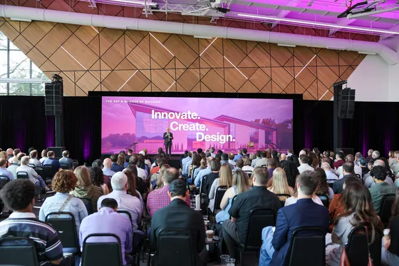
A foreword from Bob Clark, Executive Chairman & Founder.
ExploreIn 2026, LJC entered its next chapter as LJC Design & Engineering, bringing architecture and engineering into a more unified practice.
Explore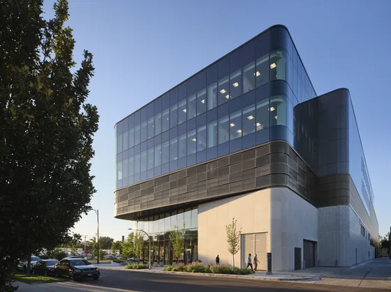
Architects, interior designers, landscape architects and urban planners bring different perspectives to a shared brief.
ExploreOur engineering team brings building services, process and structural expertise into the design conversation.
Explore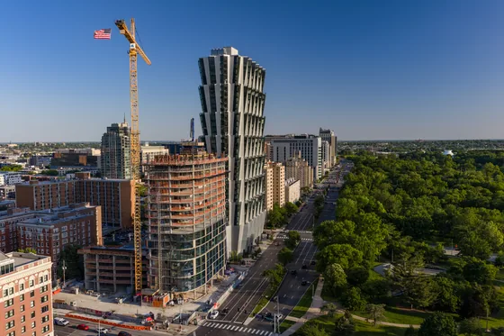
Solving our clients’ most complex challenges through design and innovation.
Explore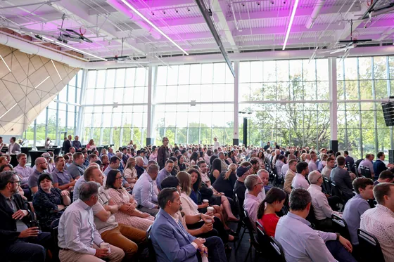
Integration connects the people and capabilities a project needs—across the enterprise, across disciplines and offices, and with the communities the work serves.
ExploreInvesting in people means more than attracting talented individuals.
Explore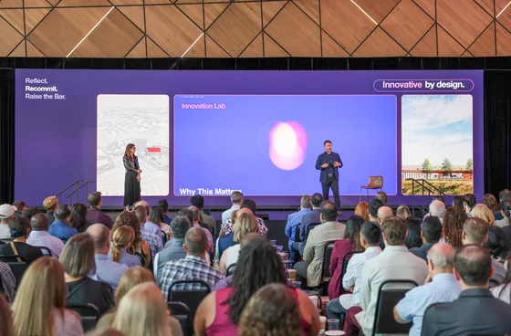
AI expands the design conversation across our practice.
Explore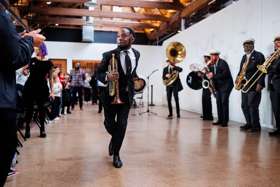
LJC believes design has a responsibility to strengthen the communities it serves.
Explore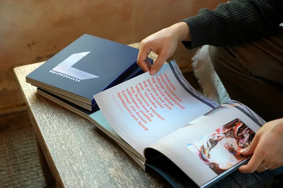
LJC believes great design should do more than solve a problem.
ExploreReverberation 2026 / Section 02
Different expertise. Shared direction.
LJC is transforming the former USX Steel Mill site on Chicago’s South Side into Quantum Shore, a major destination for science, technology, and innovation.
ExploreThe Kali Hotel brings a new luxury hospitality destination to the heart of Hollywood Park, a 298-acre entertainment district.
Explore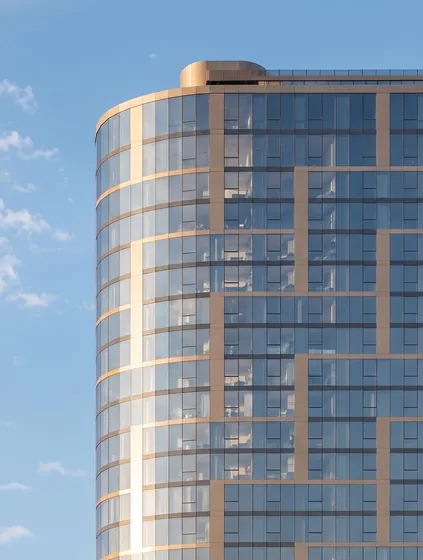
St. Louis, MO
Explore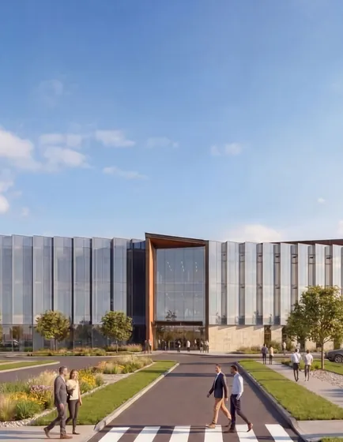
Inspired by a “Lewis Structure” the concept features two angled bars representing science and care, converging to form a central hub of collaboration and community.
ExploreDowners Grove, IL
ExploreReverberation 2026 / Section 03
Across a range of project types and scales, LJC creates purposeful, distinctive, and enduring places.
Ankara, Turkey
Explore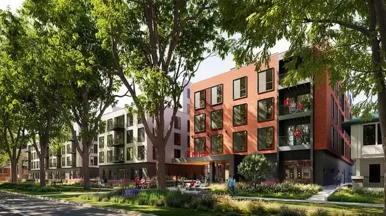
Madison, WI
Explore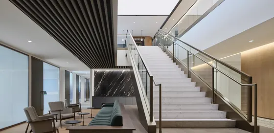
Chicago, IL
Explore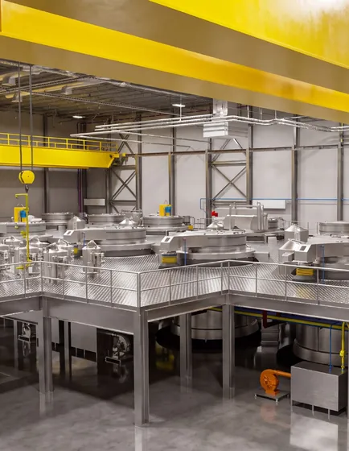
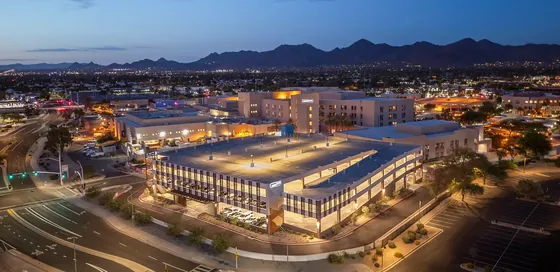
Scottsdale, AZ
Explore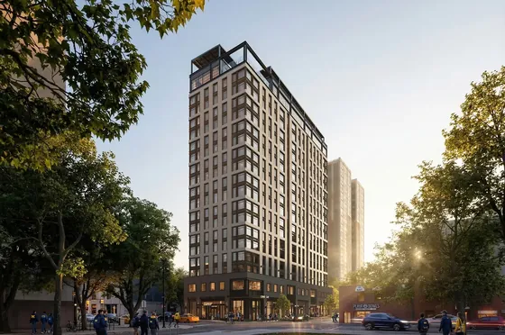
Ann Arbor, MI
Explore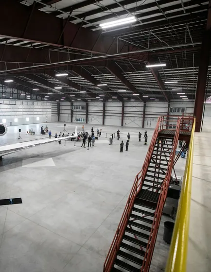
Gary, IN
Explore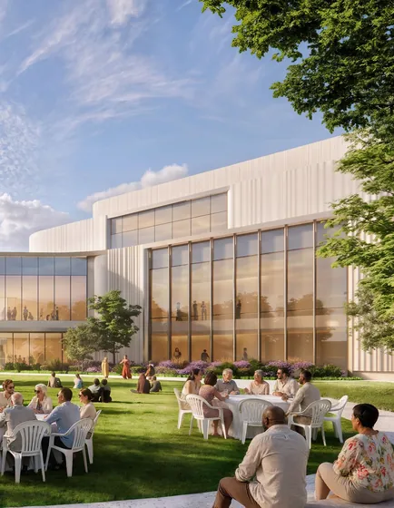
St. Louis, MO
ExploreClemson, SC
Explore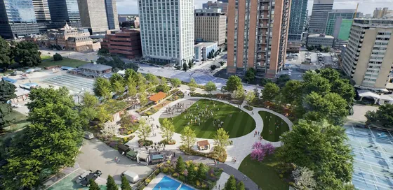
Clayton, MO
ExplorePhoenix, AZ
Explore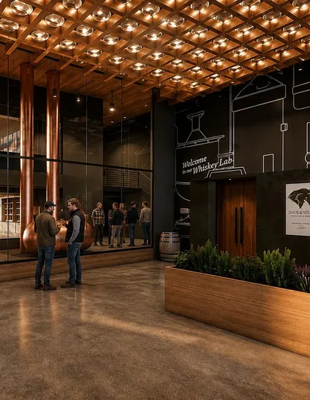
Hermann, MO
Explore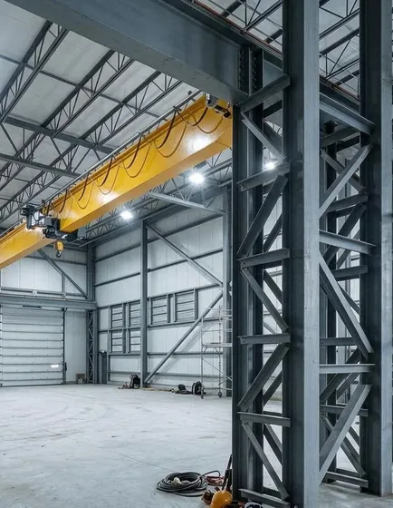
Washington, MO
Explore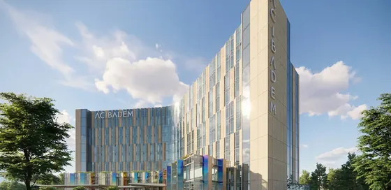
Beylikduzu, Turkey
Explore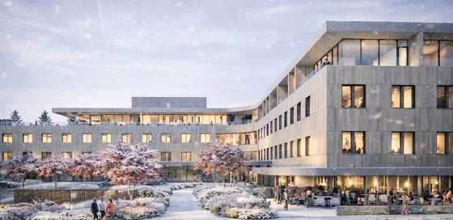
Mammoth Lakes, CA
Explore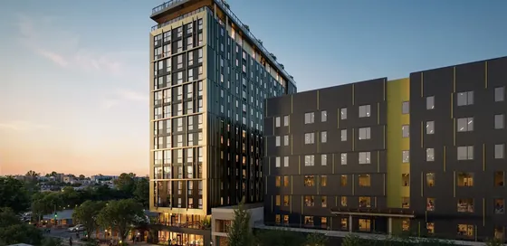
Eugene, OR
Explore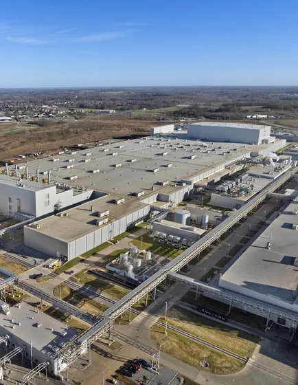
Clarksville, TN
Explore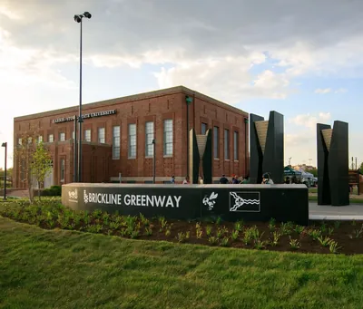
St. Louis, MO
ExploreNew York, NY
Explore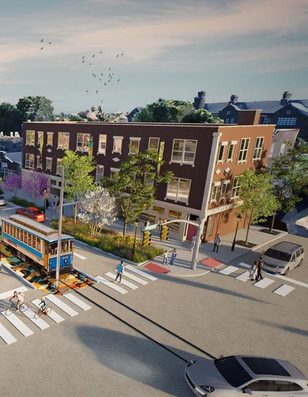
St. Louis, MO
ExploreGolden, CO
ExploreReverberation 2026 / Section 04
Four projects, explored through their design process, material details, and completed spaces.
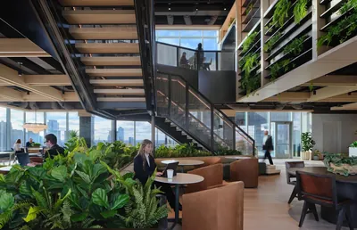
BCG, a global leader in business consulting, hired LJC to facilitate the relocation and design of their new office space in Chicago’s Fulton Market District in order to meet their expanding needs.
ExploreThe Bronzeville Advanced Outpatient Care Center began with a commitment to design with the community, not simply for it.
ExploreThe new HSSU STEM Building establishes a forward-looking home for scientific education, research, and discovery—supporting more than 660 students, faculty, and staff while strengthening HSSU’s role in preparing students for future-focused STEM careers.
ExploreLocated along the Chicago River, 191 North Wacker occupies one of Chicago’s most historically significant sites and remains a prominent presence within the city’s commercial core.
ExploreReverberation 2026 / Section 05
Design that expands access, supports opportunity, and contributes to the people and neighborhoods it serves.
The Aspire Center for Workforce Innovation was envisioned as a community center that would be a catalyst for economic mobility, youth empowerment, and community-led transformation.
ExploreThe adaptive reuse of a century-old factory in East Garfield Park gives BandWith a permanent home while creating a new cultural resource for the neighborhood.
Explore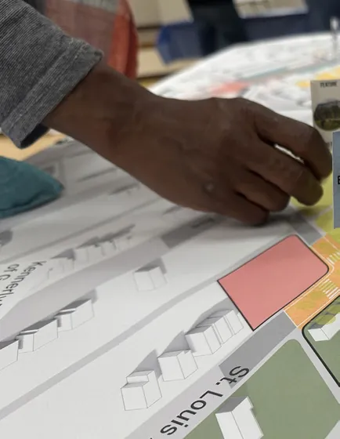
St. Louis, MO
ExploreSt. Louis, MO
Explore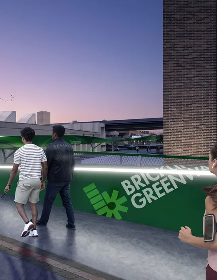
St. Louis, MO
ExploreSt. Louis, MO
ExploreIntroduction
A foreword from Bob Clark, Executive Chairman & Founder.
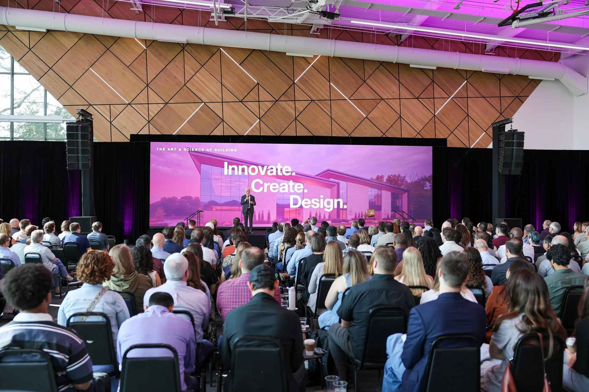
When I started Clayco, my goal was to bring innovation to the construction industry by creating an integrated approach. In 1999, with the formation of our design team, that goal became a reality. I set out with a clear vision: to create a space where the best and brightest could come together, building solutions and designs from a truly collaborative foundation. I believed—and still believe—that having architecture as an integral part of our construction process would allow us to better understand our clients’ needs and deliver outcomes that consistently exceed expectations. Our architecture team wasn’t just an addition; it was the heart of a new approach to building, where every detail is designed with purpose, precision, and passion.
Reflecting on our journey, I am incredibly proud of the work we have accomplished and the remarkable growth we have achieved together. Over the years, we have designed spaces that don’t just serve a function but inspire and elevate the lives of those who use them. Our team’s creativity, dedication, and commitment have led to innovations and designs that stand out across the industry.
As we look to the future, I am excited to see how we will continue to evolve and push the boundaries of what’s possible in architecture and construction. Together, we are not only building spaces but also shaping the future.
From the publication
The practice
In 2026, LJC entered its next chapter as LJC Design & Engineering, bringing architecture and engineering into a more unified practice.
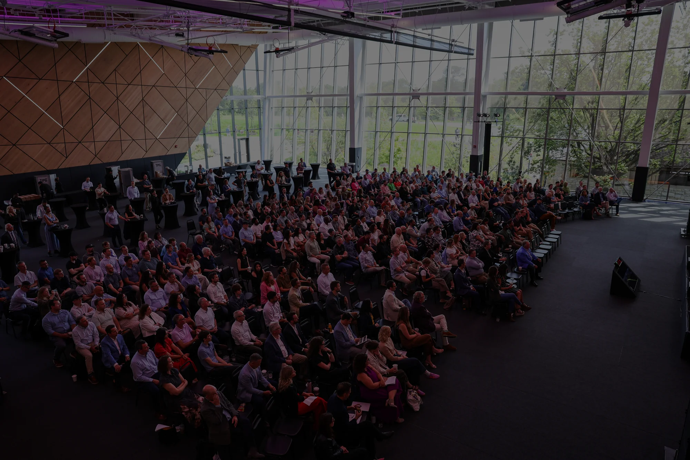
January 8, 2026: Clayco announced the merger of Clayco Design & Engineering, Inc. with The Lamar Johnson Collaborative, with the unified practice continuing under the LJC brand.
LJC’s definition of DESIGN, expanded this year. In 2026, LJC entered its next chapter as LJC Design & Engineering, bringing architecture and engineering into a more unified practice. The merger extends a model Clayco has been developing for decades: connecting creative design, technical expertise, development insight, and construction intelligence earlier and more continuously. With more than 100 engineers joining the practice, LJC gains greater technical depth while preserving the collaborative, design-led culture that has defined the firm. The underlying idea behind the merger is not simply organizational scale, but greater continuity between creative design and technical execution, giving project teams access to broader expertise as challenges become more complex.
From the publication
Introduction
Architects, interior designers, landscape architects and urban planners bring different perspectives to a shared brief.
Architects, interior designers, landscape architects and urban planners bring different perspectives to a shared brief. Working with clients and colleagues across the practice, our design team connects the experience of a room to the life of a building, a landscape and a neighborhood. The work brings people, place and ecological context into the same design conversation.
Architecture — Buildings shaped around people, program and place.
Interior Design — Spaces that connect people and everyday experience.
Landscape Architecture — Creative expression grounded in ecological systems.
Urban Planning & Design — Land use, transportation and infrastructure in context.
From the publication
Introduction
Our engineering team brings building services, process and structural expertise into the design conversation.
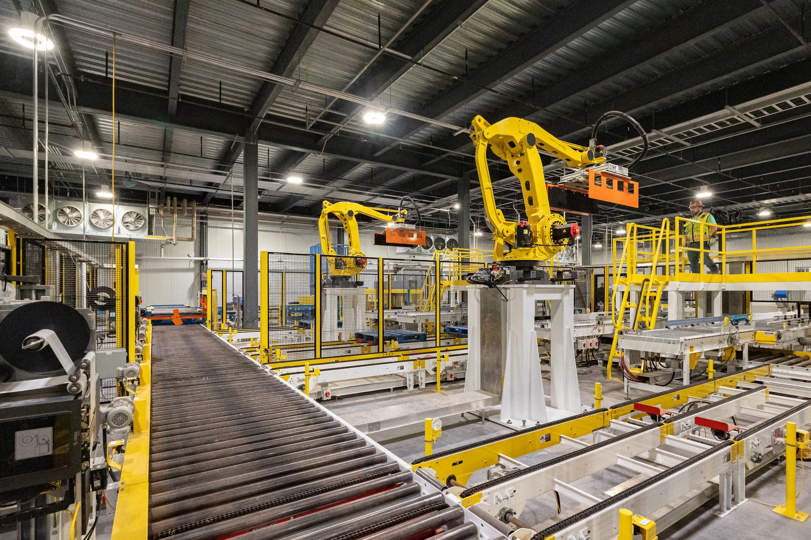
Our engineering team brings building services, process and structural expertise into the design conversation. Working with architects, clients and project partners, engineers consider how a facility is supported, how its systems operate and what its users need. Safety, occupant comfort, energy use and long-term reliability guide that work, from planning through technical design.
Building Services Engineering — Mechanical, electrical, plumbing and fire protection.
Process Engineering — Process systems and infrastructure, from concept through commissioning.
Structural Engineering — Structural design focused on safety and code compliance.
Photograph by Sam Fentress
From the publication
Our Mission & Vision
Solving our clients’ most complex challenges through design and innovation.
From the publication
Introduction
Integration connects the people and capabilities a project needs—across the enterprise, across disciplines and offices, and with the communities the work serves.
Integration connects the people and capabilities a project needs—across the enterprise, across disciplines and offices, and with the communities the work serves. Development, design and engineering, and construction inform one another. LJC brings that shared perspective to projects with CRG and Clayco, and to work with other clients, consultants and contractors.
LJC Design & Engineering brings design vision and technical expertise together within the Clayco enterprise’s integrated develop–design–build model. Our practice connects architecture, interiors, landscape and planning with structural, building services and process engineering—bringing the experience of a place and the systems that support it into one conversation.
Within this framework, CRG’s development perspective and Clayco’s construction expertise inform our work, just as our design and engineering thinking informs theirs. This exchange brings questions of site, program, cost, constructability and performance into the design process early. Together, we can explore possibilities with a deeper understanding of what it takes to realize them, carrying design intent from the first idea through delivery.
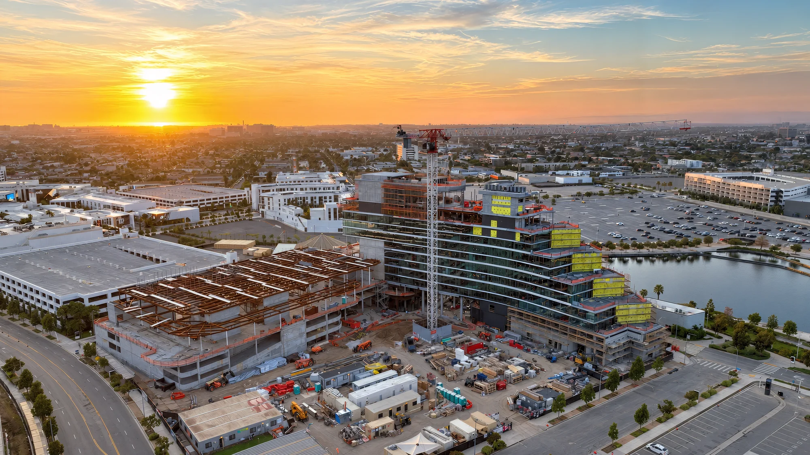
Our practice extends across partnerships and delivery models. Alongside our work with CRG and Clayco, we collaborate with other developers, contractors and consultants, bringing the same depth of inquiry and collective expertise to each project. These relationships broaden our perspective and strengthen our ability to respond to each client’s needs. Integration is how we connect that knowledge to create thoughtful places and technically rigorous solutions.
At LJC Design & Engineering, connection shapes how we work. Within the Clayco enterprise, development, design, engineering and construction inform one another. Across disciplines and offices, we share knowledge and bring different perspectives to each challenge. Through collaboration with communities, those perspectives become a deeper understanding of people and place. Together, these connections carry ideas across scales—from the reach of our enterprise to the spaces people experience every day.
From the publication
Introduction
Investing in people means more than attracting talented individuals.
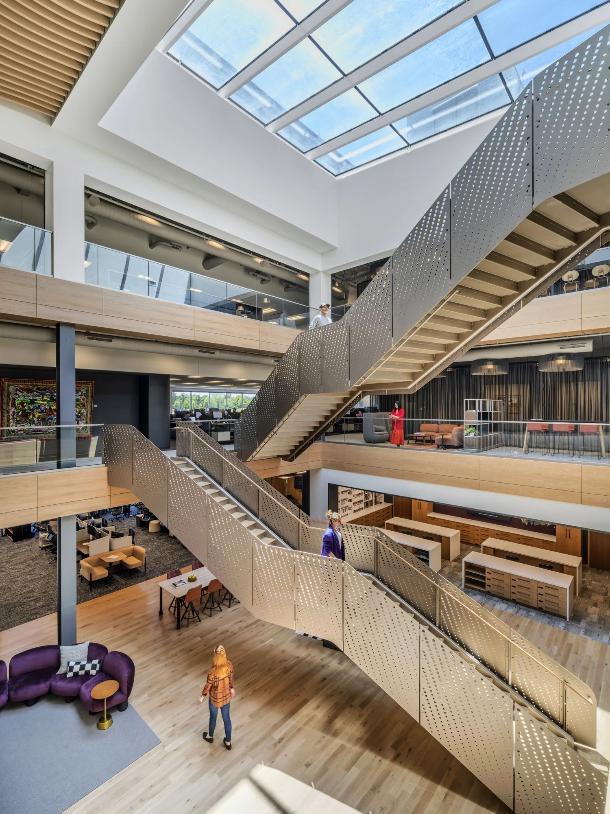
Investing in people means more than attracting talented individuals. It means creating the conditions for them to grow, stay connected, test ideas, and contribute meaningfully to the work. At LJC, that investment is reflected in a culture built on collaboration, trust, and open communication, with opportunities for people to learn from one another across disciplines and experience levels. The Russell Burns Building, home to Clayco’s headquarters and LJC’s St. Louis studio, was designed by LJC as an environment that supports connection, flexibility, and the evolving needs of the enterprise.
Investing in our people also means investing in the environments where we meet, share knowledge and do our best work.
From the publication
Introduction
AI expands the design conversation across our practice.
AI expands the design conversation across our practice. From simple models to developed visualizations, it offers new ways to explore materials, study light and compare design alternatives. These tools can also support rapid iteration and the communication of ideas. Guided by our teams’ expertise and judgment, they help connect early exploration with the broader work of design and delivery.
AI exploration, computational design and 3D printing offer connected ways to develop an idea. These studies explore materials, facade variations, models and environmental conditions. Moving between digital models and tangible form creates opportunities to compare alternatives and bring new perspectives to the work of the practice.
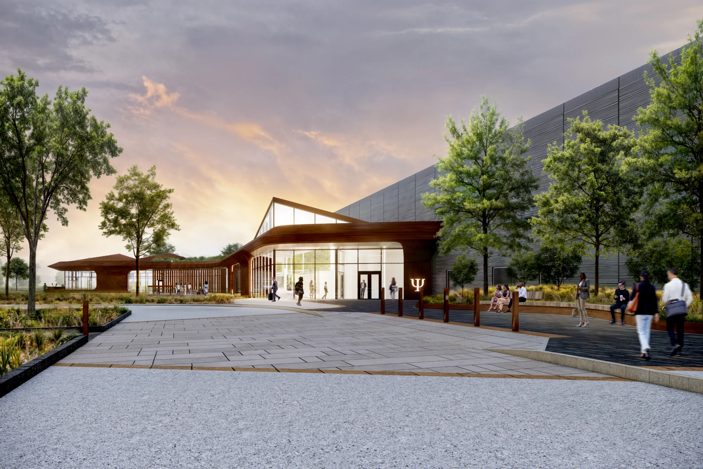
From the publication
Introduction
LJC believes design has a responsibility to strengthen the communities it serves.
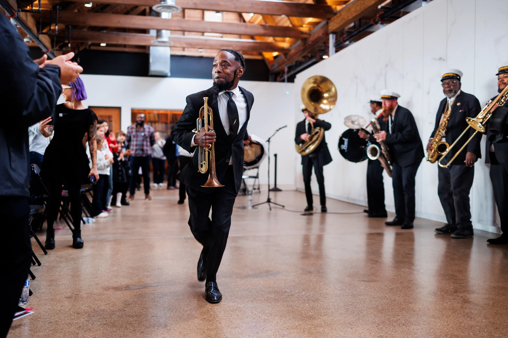
LJC believes design has a responsibility to strengthen the communities it serves. Our work seeks to create places that expand access, support opportunity, and contribute meaningfully to the people and neighborhoods around them. Projects such as BandWith Chicago, St. Louis County Library, and the Aspire Center for Workforce Innovation demonstrate that commitment in different ways. Each respond to a distinct community need, from access to performing arts and education to workforce development, public resources, and gathering space. What connects them is a shared public purpose: using design to support the programs, relationships, and experiences that help communities thrive.
From the publication
Introduction
LJC believes great design should do more than solve a problem.
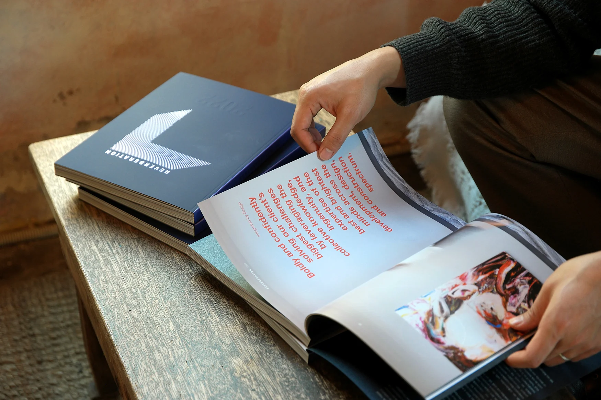
LJC believes great design should do more than solve a problem. It should create experiences that resonate, elevate expectations, and inspire people through the places they use every day. Recognition from peers, clients, and industry organizations reflects the strength of that work, but the award itself is only part of the story. Our award-winning projects span markets, scales, and communities, yet they share a commitment to design excellence, thoughtful problem-solving, and meaningful impact. Each recognition affirms the value of ideas carried through with rigor and collaboration, while helping extend the reach of the work, strengthen LJC’s reputation, and inspire what comes next.
Seeing together changes how we design. LJC’s World Tour of Design brings colleagues across offices and disciplines together to experience projects firsthand, exchange ideas, and ask what could be better. These shared discoveries broaden our perspective, deepen our craft, and inspire new possibilities for the places we create.
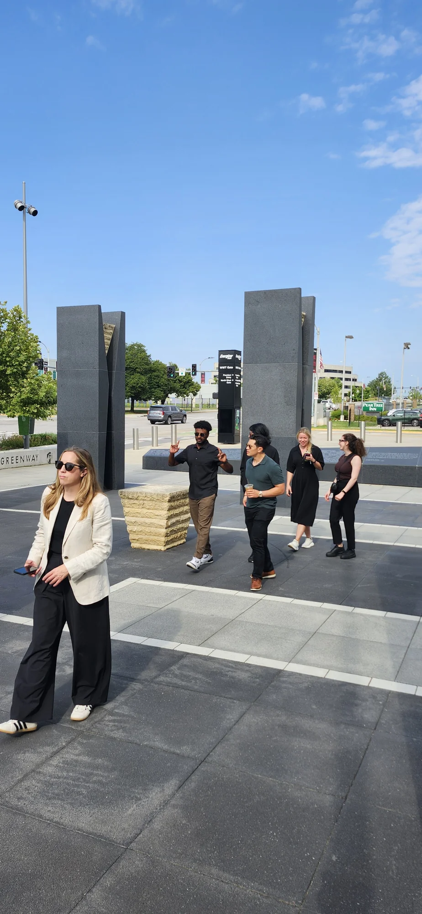
From the publication
Integrated by Design
LJC is transforming the former USX Steel Mill site on Chicago’s South Side into Quantum Shore, a major destination for science, technology, and innovation.

LJC is transforming the former USX Steel Mill site on Chicago’s South Side into Quantum Shore, a major destination for science, technology, and innovation. The 440-acre redevelopment along Chicago’s lakefront, reconnects this long-underused waterfront property to the city, attracting new investment, jobs, and academic partnerships.
PsiQuantum’s first facility introduces an architectural identity for a new chapter on Chicago’s industrial lakefront. The exterior gives a highly specialized research environment a visible presence, expressing the ambition of the technology within. As the design moves into construction, close coordination between LJC and Clayco carries that vision through detailing, material selection, and installation.
A viewing portal brings the quantum computing area into the everyday experience of the building. Offering a direct view into the facility’s technical core, it connects people with the purpose of the work happening inside. This moment of transparency makes the technology part of the interior experience and introduces the complex engineering that supports it.

Bringing first-of-its-kind quantum technology into a working facility requires close integration of equipment, infrastructure, and space. LJC’s design, engineering and process architecture team helped plan and integrate the cryogenic and quantum systems essential to PsiQuantum’s R&D roadmap. Working with specialized equipment manufacturers and enterprise partners CRG and Clayco, the team connected technical requirements with facility planning and construction through a flexible design-build approach.
As construction advances, the shared work of CRG, LJC, and Clayco takes physical form. Coordination across development, design, engineering, and construction connects specialized equipment requirements with the realities of a challenging site. Each milestone brings the facility closer to supporting PsiQuantum’s next stage of testing and development—and begins a new chapter for this historic industrial ground.

From the publication
Integrated by Design
The Kali Hotel brings a new luxury hospitality destination to the heart of Hollywood Park, a 298-acre entertainment district.

The Kali Hotel brings a new luxury hospitality destination to the heart of Hollywood Park, a 298-acre entertainment district. Overlooking Lake Park toward SoFi Stadium and YouTube Theater, the hotel also provides walkable access to the Intuit Dome and Kia Forum.
The design team refined the hotel’s floorplate and room layout to improve planning efficiency while strengthening the building’s curved architectural form. By adjusting room widths, redistributing floor area, and coordinating the structural layout, the team expanded the curve from a 55-foot to a 70-foot radius.
This work created a more efficient plan, accommodated the required hotel program, and produced a smoother, more continuous façade.

At the ground level, the building opens toward the district, creating a welcoming gateway to Hollywood Park. A collection of luxury amenities including a spa, pool deck, and rooftop lounge extends the guest experience beyond the hotel rooms.
The spaces combine comfort, energy, and a strong connection to the culture and character of Los Angeles.

From the publication
Integrated by Design
For more than a decade, the intersection of Kingshighway and Lindell in St.
For more than a decade, the intersection of Kingshighway and Lindell in St. Louis has awaited the right vision. Now under construction, Albion West End is a 30-story residential tower shaped through intensive coordination that resolved key project challenges and improved planning, parking, and construction efficiency.
At Albion West End, the discipline came first. Rather than designing a custom facade and then trying to afford it, we started with a kit of standard, generic details: a typical window wall unit, a header condition, and a ground-level base. We treated those as the fixed vocabulary. Custom pieces were held to a handful, concentrated at the reveal where they would do the most work. Cost came out of the enclosure by restraint, not compromise. Then we applied our design language, modulating the rhythm of the units, breaking the grid where the amenity floor demanded it, and letting the base and tower express themselves through the same set of parts. The result is a facade that reads as deliberate and layered, built almost entirely from components a fabricator could price on day one.
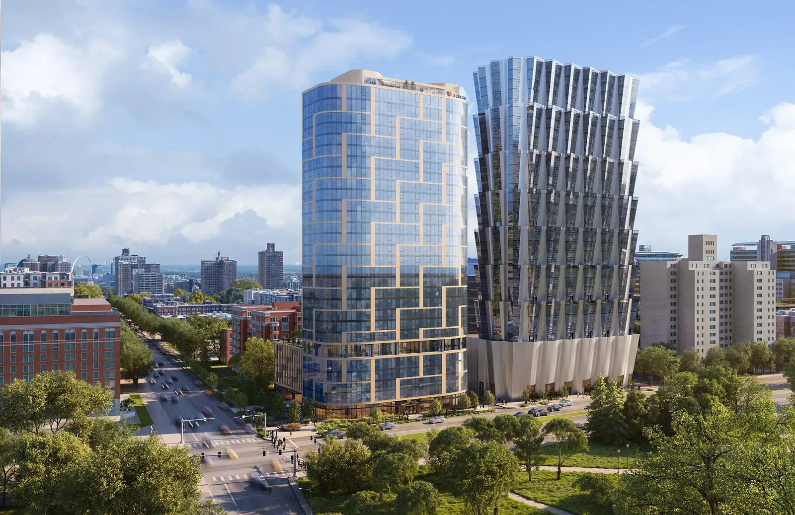
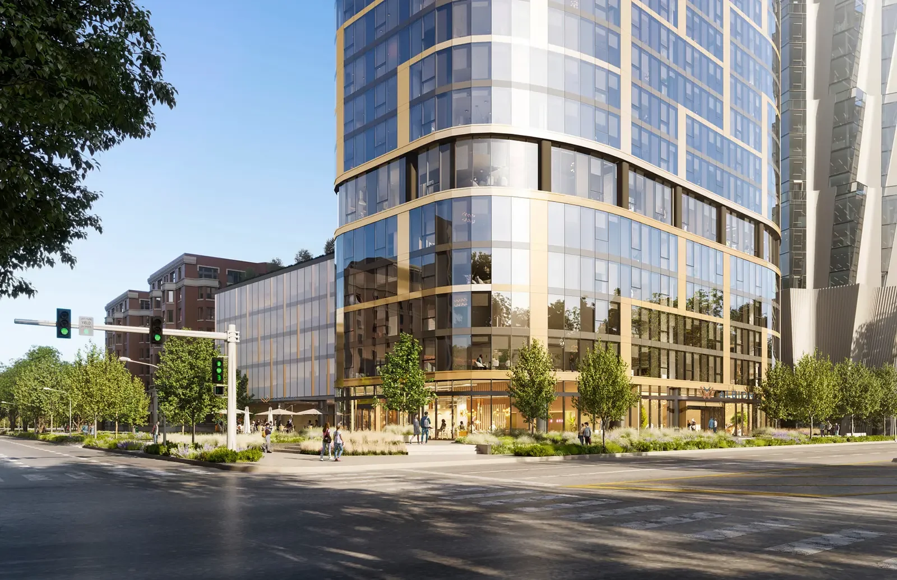
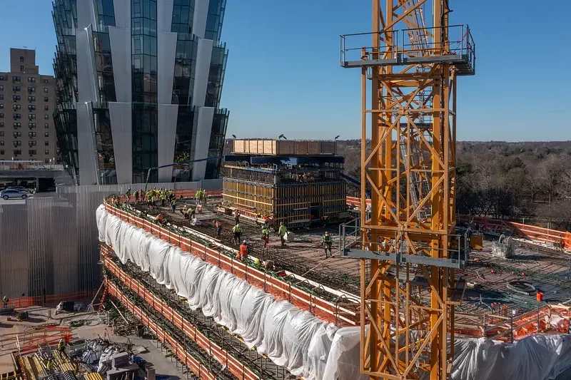
From the publication
Integrated by Design
Inspired by a “Lewis Structure” the concept features two angled bars representing science and care, converging to form a central hub of collaboration and community.
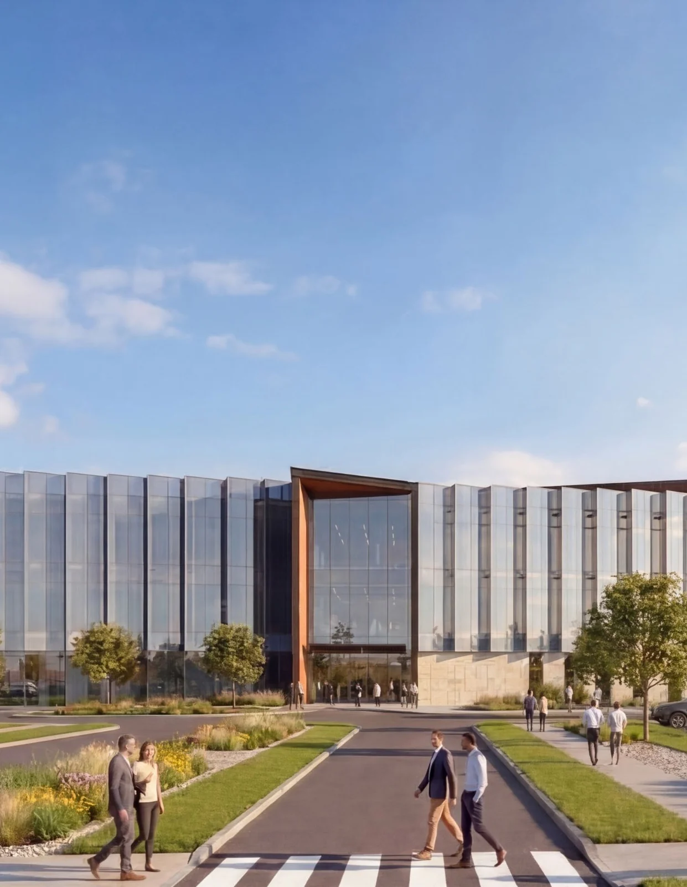
Inspired by a “Lewis Structure” the concept features two angled bars representing science and care, converging to form a central hub of collaboration and community. This balance of diverse yet complementary elements extends beyond the concept and into the building’s technical development.
Building systems were advanced through close coordination between different disciplines. Integrated modeling allowed systems to be visualized together, resolving conflicts and optimizing routing while maintaining the architectural design intent. MEP renderings illustrate the interconnected infrastructure that supports the building from floor to floor.
The building’s diverse program was organized to support specialized research needs while creating strong connections across the campus. Laboratory modules were coordinated with the structural bay system, establishing a consistent planning framework for lab layouts, circulation, equipment, and building infrastructure. The connector courtyard links the research programs with the Lab Admin building, while the arrival garden and primary entry create a welcoming transition into the campus.
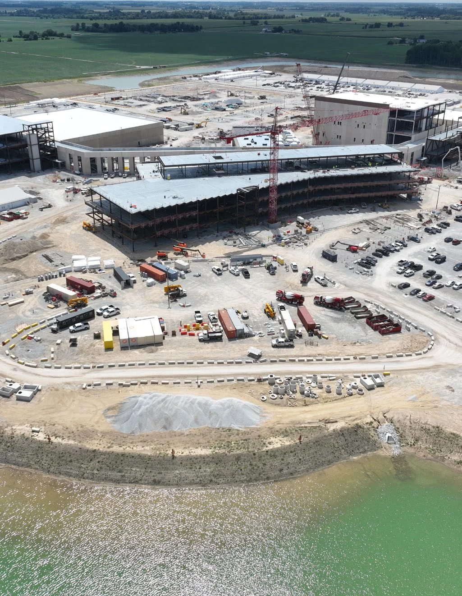
From the publication
Integrated by Design
The Lurie Children’s Hospital Ambulatory Center in Downers Grove is being delivered through a collaborative partnership between LJC, Clayco, and ZGF.
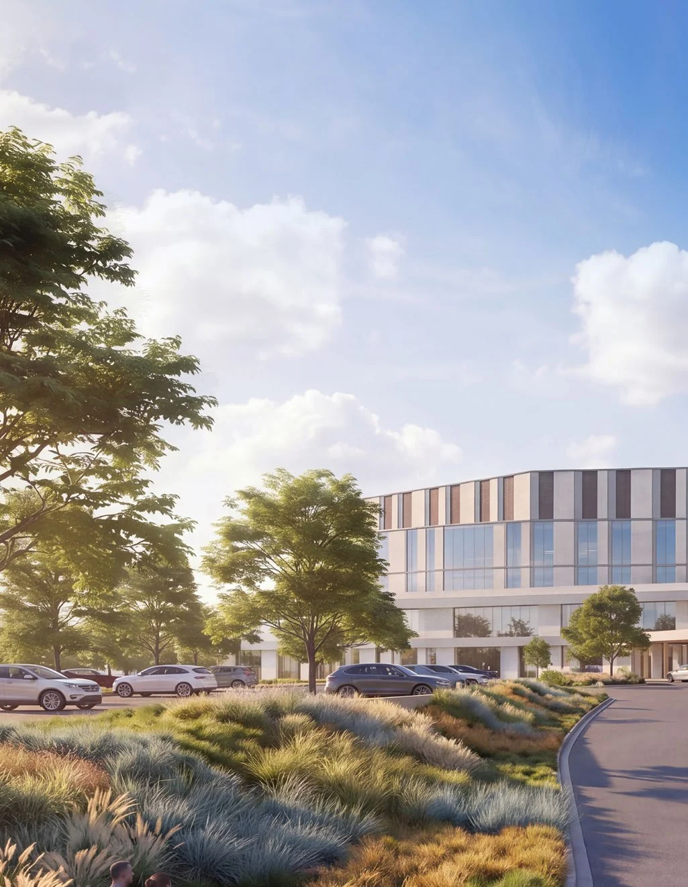
The Lurie Children’s Hospital Ambulatory Center in Downers Grove is being delivered through a collaborative partnership between LJC, Clayco, and ZGF. ZGF serves as the Design Architect and LJC as the Architect of Record, working together to bring the shared design vision to life. The new pediatric healthcare facility brings together specialized clinical environments with patient and family spaces, supporting amenities, and thoughtfully designed outdoor areas. Together, these spaces create a destination centered on care and community. A multidisciplinary approach integrates architecture, landscape architecture, and engineering to create a cohesive experience across the building and site.
The day after the interview and same-day award, the design-build team joined Lurie Children’s leadership and users for two days of intensive workshops. Jointly facilitated by LJC and ZGF, these work sessions brought clinical, operational, design, and construction perspectives into one conversation, all with Clayco at the table early. Doctors, nurses, and support staff shared everyday needs alongside leadership’s priorities, helping the team establish a common direction and advance the design with a shared understanding of care, operations, and delivery.
LJC, ZGF, and Clayco worked in lockstep, sharing information openly as the design evolved. ZGF’s medical planning expertise and LJC’s design and delivery experience informed a shared process, with Clayco consistently at the table to contribute construction insight. Shared working tools kept studies, decisions, and changes visible across the team, allowing planning, design, and construction considerations to advance together.
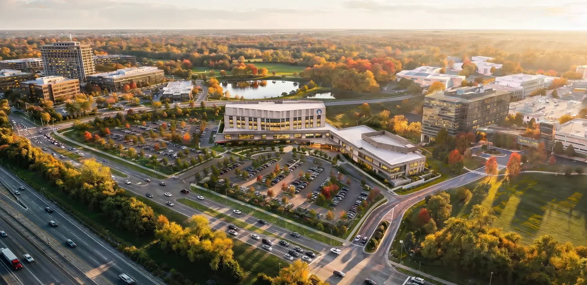
Integration helped the team meet the budget while protecting the experience of children and families and the efficiency of clinical spaces. Expert medical planning established how the facility needed to function, while architecture, interiors, and landscape developed alongside it to make those spaces welcoming and comfortable. Clear wayfinding, intuitive circulation, thoughtful waiting spaces, and views to nature support a shared purpose: easing stress for families and helping staff deliver care.
Early, ongoing evaluation helps the team deliver on the design’s promises. By testing decisions against cost, schedule, and constructability as they develop, LJC and Clayco can identify trade-offs while there is still time to respond thoughtfully. Together with ZGF and Lurie Children’s, the team establishes and protects the priorities that matter most—aligning the budget with clinical needs and the experience of children, families, and staff.
With groundbreaking planned for 2027, the collaboration established from day one continues to guide the project forward. Lurie Children’s, LJC, ZGF, and Clayco remain aligned around a shared vision. The decisions made today are laying the foundation for a facility designed to support children, families and caregivers for years to come.
From the publication
Featured Projects / Healthcare
Located in Ankara, Turkey, the Acibadem Bayındır Hospital transforms an existing medical campus through the strategic renovation of the existing hospital tower and the addition of a contemporary outpatient clinic.

Located in Ankara, Turkey, the Acibadem Bayındır Hospital transforms an existing medical campus through the strategic renovation of the existing hospital tower and the addition of a contemporary outpatient clinic. The design establishes a cohesive architectural identity that reflects Acibadem's commitment to innovation, wellness, and patient-centered care while creating a prominent healthcare destination within the city's rapidly evolving urban context.
The project is defined by the dialogue between two complementary forms. A refined, white terracotta tiled tower expresses precision and verticality, while a warm terracotta podium anchors the development at the pedestrian scale. Deeply articulated façade elements, integrated sun-shading features, and expansive glazing balance daylight, privacy, and energy performance, creating interiors that promote healing while responding to Ankara's climate.
At street level, landscaped plazas, generous canopies, and clearly defined entrances establish intuitive arrival sequences for patients, visitors, and staff. The new clinic extends the campus with transparent public spaces that strengthen connections between healthcare, landscape, and the surrounding neighborhood. Together, the renewed hospital and annex present a contemporary architectural expression that elevates the patient experience while positioning Acibadem Bayındır Hospital as a modern benchmark for healthcare design in Turkey.

From the publication
Featured Projects
Chapter Mifflin is a six-story student housing development in Madison’s Mifflin District that delivers 163 units and 511 beds in a dense, highly visible neighborhood context.
Chapter Mifflin is a six-story student housing development in Madison’s Mifflin District that delivers 163 units and 511 beds in a dense, highly visible neighborhood context. LJC's design approach balances scale and neighborhood character by breaking down building massing at the pedestrian level while still meeting program and density goals.
The project combines modern student-living expectations with a contextual exterior expression intended to strengthen the surrounding streetscape rather than overpower it. Interior planning supports student routines with amenity-rich communal spaces and practical unit layouts that prioritize function, comfort, and long-term livability.
The development also contributes to the local housing supply by introducing high-quality inventory in a market with sustained student demand. Overall, Chapter Mifflin reflects a calibrated urban infill strategy: efficient in unit delivery, deliberate in design identity, and responsive to both residents and the broader district fabric.
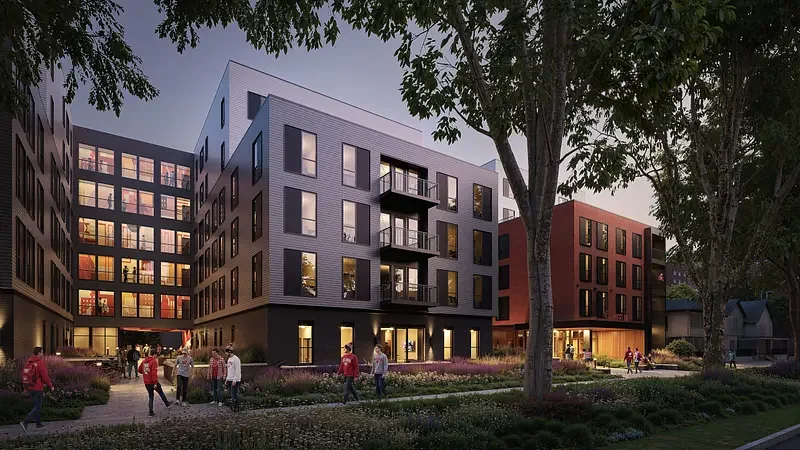
From the publication
Featured Projects
Willkie Farr & Gallagher entered the Chicago market in 2020 with a compact team and quickly expanded as the office grew in both headcount and practice presence.
Willkie Farr & Gallagher entered the Chicago market in 2020 with a compact team and quickly expanded as the office grew in both headcount and practice presence. LJC supported that trajectory by renovating and expanding the workplace to create a more connected and high-performing legal environment.
The design strategy emphasizes collaboration, mentorship, and daily interaction through a hospitality-forward layout that balances private work needs with shared team zones. The project includes upgraded client-facing areas, modernized support spaces, and flexible zones that can adapt as staffing and service needs evolve.
Rather than treating the office as static, the planning approach reflects growth over time and gives the firm a stronger long-term footprint in Chicago. Overall, the project positions the office as both a professional destination for clients and a recruiting and retention asset for attorneys and staff.
From the publication
Featured Projects
From the publication
Featured Projects
The HonorHealth Shea Parking Garage will contain 466 parking stalls to resolve the issues found in the current parking conditions - where traffic issues are often triggered by the 90th St.
The HonorHealth Shea Parking Garage will contain 466 parking stalls to resolve the issues found in the current parking conditions - where traffic issues are often triggered by the 90th St. traffic lights, the hospital entrance and patient drop-off,and the nearby private parking lots.
The landscape design boasts a wide array of native and drought resistant planting that provides a backdrop for the entrance of the Shea Medical Center. Water harvesting is a notable feature of the landscape design, aiming to capture rainwater in two retention gardens to the north of the garage.
A pedestrian plaza between the existing medical center and garage offers cafe-style seating, offering a convenient social gathering space for public visitors, as well as a venue space for community events.
The garage’s exterior will be clad with custom perforated bronze metal panels along the north, west, and south exterior elevations, around the two exit stairs at the northwest and northeast corners, and along the pedestrian bridge. The southwest corner holds space for a painted mural that can be visible by passing pedestrians.
From the publication
Featured Projects
Chapter Ann Arbor is a 19-story mixed-use student housing development located near the University of Michigan, combining 149 units and 599 beds with street-level retail activation.
Chapter Ann Arbor is a 19-story mixed-use student housing development located near the University of Michigan, combining 149 units and 599 beds with street-level retail activation.
LJC's concept pairs a historic-inspired base with a contemporary loft-style residential tower, creating a layered architectural expression that responds to local context while signaling a modern living experience.
The project is positioned to strengthen the pedestrian environment through active ground-floor uses and a clear urban edge, while upper-level residential programming supports student needs with amenity-rich, community-oriented spaces. Landscape and site strategies reinforce entry identity, circulation, and day-to-day usability for residents and visitors.
Beyond aesthetics, the building addresses practical market demand for high-quality student housing in a constrained, high-interest area. The result is a prominent urban residential asset that blends contextual design cues, functional planning, and mixed-use value in one cohesive development.
From the publication
Featured Projects
LJC Design & Engineering provided architecture and structural engineering services for a new 54,000 SF corporate jet hangar at Gary/Chicago International Airport (GCIA), now leased by Wingtip Aviation.
LJC Design & Engineering provided architecture and structural engineering services for a new 54,000 SF corporate jet hangar at Gary/Chicago International Airport (GCIA), now leased by Wingtip Aviation. The LJC team developed the project from schematic design through construction documents, and construction administration.
The new hangar supports Gary Airport's broader expansion efforts, attracting new tenants and reinforcing the airport's role in the region's economic growth. The pre-engineered metal structure and envelope, called for close coordination between LJC's architecture team and in-house structural engineering group, to integrate the aircraft door, foundation, and building systems.
LJC's design includes client reception area, office, shop, and lobby space with a mezzanine, finished to a standard office-quality level to support daily operations alongside the hangar bay. LJC brought direct institutional knowledge and a strong working relationship to the project, having extensive experience at GCIA.
From the publication
Featured Projects
The Opera Theatre of Saint Louis is a high-impact civic project that will expand Clayton’s cultural and entertainment offerings while creating a new destination for the community.
The Opera Theatre of Saint Louis is a high-impact civic project that will expand Clayton’s cultural and entertainment offerings while creating a new destination for the community. Located in the heart of Clayton, the project is anchored by the Opera’s Garden, a space envisioned as an integral part of the theater experience and as important to the community as the theater itself. It provides a place for people to gather before, during, and after performances.
Strategically positioned within a larger network of green spaces, the Opera’s Garden is designed to support both intimate gatherings and larger community events while preserving the site’s existing trees. The architecture draws inspiration from a “curtain in motion,” expressing the energy of performance through a flowing facade and carefully positioned openings that blur the boundary between the garden and the front-of-house spaces.
The theater will accommodate 825 seats while delivering an exceptional acoustic experience. A key design goal is to establish an intimate relationship between the audience, orchestra pit, and stage, creating a sense of connection and immediacy that brings the audience closer to the performance.
From the publication
Featured Projects
This project is located on a steeply sloping site north of campus.
This project is located on a steeply sloping site north of campus. To remain contextually sensitive, the building uses a stepping massing strategy that follows the grade to reduce its visual height and maintain a human scale. Vertical recesses create balconies while breaking up the building's length, and horizontal layering cleanly divides the structure into a traditional base, middle, and top.
A prominent carved corner forms a shaded public entry featuring a mirrored-metal soffit and wood-clad columns that reflect the surrounding landscape. This gateway leads into a public courtyard activated by dining and retail space.
From the publication
Featured Projects
The Shaw Park Livable Community Master Plan reimagines a central civic asset in the City of Clayton.
The Shaw Park Livable Community Master Plan reimagines a central civic asset in the City of Clayton. Designed to serve residents of all ages and abilities, the project introduces a flexible, year-round facility that strengthens Shaw Park’s role as a welcoming community gathering place.
The master plan replaces the single-use rink with adaptable indoor and outdoor spaces that support a wide range of activities, including fitness and wellness programs, court sports, community events, and informal social gathering.
Sustainability is a key driver of the design, aligning with the City of Clayton’s commitment to responsible civic development. The project targets LEED Silver certification and incorporates best practices in energy efficiency, material selection, and site planning.
Through a collaborative planning and design process, the Shaw Park Livable Community Master Plan establishes a forward-looking vision for recreation and wellness, balancing environmental stewardship, community connection, and adaptable design to support Clayton’s residents for generations to come.
From the publication
Featured Projects
The One Arizona Center, originally developed in 1989, is poised for a major transformation.
The One Arizona Center, originally developed in 1989, is poised for a major transformation. Located at 400 East Van Buren Street in the heart of downtown Phoenix, this 19-story office tower is surrounded by vibrant entertainment, sports venues, shopping, universities, and a dynamic bioscience district.
The proposed renovation aims to convert the existing office space into a world-class hotel, featuring premier dining, meeting spaces, and upscale amenities while preserving the building’s integrity and cultural significance.
Drawing inspiration from its surroundings, the design emphasizes a strong connection to the region, blending the built environment with the natural landscape to create seamless transitions between interior spaces and the lush, terraced gardens. The vision embraces understated luxury and a modern design sensibility, reflecting the unique character of Phoenix.
From the publication
Featured Projects
Perched atop a dramatic bluff overlooking the Missouri River, River Cliff Distillery transforms two existing steel-frame structures into a vibrant, destination-driven hospitality experience rooted in craft, community, and landscape.
Perched atop a dramatic bluff overlooking the Missouri River, River Cliff Distillery transforms two existing steel-frame structures into a vibrant, destination-driven hospitality experience rooted in craft, community, and landscape. The project reimagines the site as a fully operational distillery and immersive visitor destination featuring a working distillery, full-service restaurant, bar, and retail gift shop, all carefully designed to celebrate the process of distilling while embracing expansive interior and exterior views of the river valley.
The adaptive reuse strategy preserves and repurposes the existing industrial framework, creating a layered arrival and guest experience that respond to the site’s topography and bluff-edge setting. Indoor and outdoor spaces are seamlessly connected, allowing visitors to move fluidly between production tour, dining, gathering, and event environments.
Surrounding the core venue, the landscape is organized into a series of immersive outdoor rooms and gathering spaces, including native-inspired gardens, sweeping meadow plantings, and a bluff-side amphitheater with stage, lawn seating, and limestone retaining walls, creating integrated tiered seating. Additional features such as gas fire pits, catenary lighting, a scenic wedding overlook, and flexible event spaces position River Cliff Distillery as both a regional attraction and a year-round social destination.
From the publication
Featured Projects
This project includes multiple strategic additions and upgrades to WEG’s existing manufacturing campus, all designed to substantially increase production capacity and operational efficiency while maintaining continuous facility operations.
This project includes multiple strategic additions and upgrades to WEG’s existing manufacturing campus, all designed to substantially increase production capacity and operational efficiency while maintaining continuous facility operations.
Upon completion, the enhanced facility will enable WEG to manufacture new transformers across a full range of sizes, strengthening its ability to serve regional and national clients. The expansion directly supports the growing needs of Ameren, the St. Louis area’s largest electric utility and WEG’s primary customer, helping to bolster grid reliability and energy infrastructure throughout the region.
The scope of work includes the construction of a new office addition, tank farm, paint shop, fabrication shop, and a series of supporting infrastructure and process improvements integrated into the existing facility. Due to the complexity of maintaining active manufacturing operations, the project will be executed in carefully sequenced phases, resulting in a 16-month construction duration.
Through close collaboration across preconstruction, project development, operations, and design teams, the project has been strategically planned to minimize disruptions while delivering long-term value. With planning efforts well underway, groundbreaking is anticipated in April 2026, marking the start of a transformative upgrade that positions WEG Transformer USA for continued growth and leadership in the power and energy sector.
From the publication
Featured Projects
Acibadem Beylikduzu Hospital is conceived as a large-scale mixed-use medical campus in Istanbul's Beylikduzu district, combining advanced healthcare facilities with supporting residential and public-facing uses.
Acibadem Beylikduzu Hospital is conceived as a large-scale mixed-use medical campus in Istanbul's Beylikduzu district, combining advanced healthcare facilities with supporting residential and public-facing uses.
LJC's architecture integrates an approximately 800,000 SF hospital with a 240,000 SF residential component, plus ground-floor retail and cafe space designed to support staff, visitors, and neighborhood activity.
The planning approach emphasizes operational integration across medical, hospitality, and daily-support functions while maintaining a coherent campus identity.
Programmatically, the project positions healthcare delivery as part of a broader urban ecosystem rather than an isolated institutional block. The combined scale and mixed-use strategy allow the development to serve clinical needs while also improving convenience and livability for users connected to the campus. Overall, the project demonstrates a comprehensive model for healthcare-centered urban development that balances performance, access, and long-term adaptability.
From the publication
Featured Projects
Set against the towering peaks of the Eastern Sierra, Eleven Thousand is envisioned as a modern mountain basecamp and an elevated hotel retreat.
Set against the towering peaks of the Eastern Sierra, Eleven Thousand is envisioned as a modern mountain basecamp and an elevated hotel retreat. It blends raw alpine energy with crafted comfort, welcoming guests into a warm setting shaped by natural woods, muted colors, and clean architectural lines that frame the shifting drama of Mammoth Lakes.
Inside, the hotel centers on an elevated mountain experience. Guestrooms offer calm, restorative spaces that are simple, tactile, and thoughtfully composed, giving guests a quiet place to recharge after exploring the high alpine terrain.
Careful detailing, integrated lighting, and durable, performance-driven finishes shape an environment that feels both grounded and uplifting—an authentic mountain escape for those drawn to beauty, adventure, and the freedom of wide-open landscapes.
From the publication
Featured Projects
Chapter Eugene is a new 15-story, 491-bed student housing community at 13th Avenue and Alder Street, near the University of Oregon.
Chapter Eugene is a new 15-story, 491-bed student housing community at 13th Avenue and Alder Street, near the University of Oregon. Developed by CRG with Kenter Capital, the project places students less than a block from the university’s main gateway and close to academic, recreation, and retail destinations.
Inspired by Eugene’s “Emerald City” nickname, the design embraces an Emerald City Treehouse concept. A textured dark-green metal facade evokes tree bark, contrasted by a warm brass-toned “heartwood” core that reveals activity within. The design culminates in a sculptural 15th-floor amenity level with indoor and outdoor spaces overlooking campus and the surrounding landscape.
The community includes 133 fully furnished studios to five-bedroom units with contemporary finishes, stainless steel appliances, in-unit laundry, and high-speed internet. Amenities include study spaces, a fitness center, outdoor terraces, and a rooftop Jacuzzi, sauna, and cold plunge. A grade-responsive entry sequence leads to a welcoming lobby, social stair, and library.
At street level, 2,200 square feet of retail activates Alder Street, complemented by secure parking and bike storage. Delivering ahead of Fall 2027, Chapter Alder adds needed student housing and a distinctive architectural identity to Eugene, contributing to CRG and LJC’s growing portfolio of purpose-built student communities.
From the publication
Featured Projects
The facilities will house the production of Hankook’s passenger car (PCR) and truck/bus (TBR) tire production lines.
The facilities will house the production of Hankook’s passenger car (PCR) and truck/bus (TBR) tire production lines. This large-scale project includes site improvement, utility installation and relocations, paving, deep foundations, concrete foundations/ slabs and deep equipment pits, multistory structural steel Mixing Building, ASRS mat foundations, IMP exterior, CMU-IMP interior walls, TPO roofing, and misc supporting architectural features.
Systems for the project include special hazard and in-rack fire suppression, domestic plumbing, HVAC, process mechanical distribution piping and equipment (cooling/chilled water, compressed air, steam, etc), industrial electrical distribution, process controls, and fire alarm systems.
Other components of the project include large additions to the existing Phase 1 plant, ancillary buildings to support the main plan, rail spur additions, and main entry canopy upgrades.
From the publication
Featured Projects / Landscape & Urban Design
A one-mile stretch of the Brickline Greenway connects Harris-Stowe State University and St. Louis CITY SC Stadium along Market Street.

This one-mile stretch of the Brickline Greenway— from Harris-Stowe State University to the St. Louis CITY SC Stadium—is one of the newest additions to the network of paved, accessible multi-modal trails from the regional public agency, Great Rivers Greenway. Situated along Market Street from Compton Avenue to 20th Street, this segment is one part of the LJC-designed Brickline Greenway, which adds up to 14 miles of pathways, linking up to 17 neighborhoods connecting Forest Park, Gateway Arch National Park, Fairground Park, Tower Grove Park, and hundreds of destinations in between.
The Brickline Greenway upholds Great Rivers Greenway’s mission: to work with partners to ensure that the path is a catalyst for equitable economic development, creating a vibrant space for people to gather, explore and connect to the city and each other.

From the publication
Featured Projects / Workplace
Thompson Coburn's renovation is transforming two occupied floors of a landmark Midtown Manhattan high-rise — not just the space, but the way the firm works within it.

Thompson Coburn's renovation is transforming two occupied floors of a landmark Midtown Manhattan high-rise — not just the space, but the way the firm works within it. The design strategy begins with a simple reallocation: as technology reduces the footprint of storage, libraries, and server rooms, that reclaimed square footage is being redirected toward people. A universal attorney office standard replaces a traditional hierarchy of private offices, giving everyone equal access to natural light, open views, and the kinds of shared environments that support both daily work and client relationships. The result is a workplace built around connection — a hospitality-inspired environment where attorneys, staff, and clients will move through spaces designed for exchange rather than enclosures.

From the publication
Featured Projects
The Delmar East Loop Streetscape project is a transformative public realm initiative aimed at enhancing pedestrian safety, accessibility, and neighborhood identity along a 0.4-mile segment of Delmar Boulevard in St.
The Delmar East Loop Streetscape project is a transformative public realm initiative aimed at enhancing pedestrian safety, accessibility, and neighborhood identity along a 0.4-mile segment of Delmar Boulevard in St. Louis.
Led by LJC for the East Loop Community Improvement District, the project focuses on reimagining the corridor as a more walkable, multimodal environment through targeted infrastructure and placemaking improvements. The design scope includes widened and ADA-compliant sidewalks, safer roadway configurations, improved crossings, and traffic-calming strategies informed by detailed traffic studies and crash data analysis.
Streetscape enhancements incorporate new lighting, street trees, planting, and site furnishings to create a cohesive and inviting public realm. The project also prioritizes connectivity to adjacent assets, including Lucier Park, while integrating stormwater management strategies and sustainable design considerations.
A key component of the effort is robust community engagement and creative placemaking, including stakeholder workshops and the development of an art strategy rooted in local culture and identity. The result is a forward-looking streetscape vision that balances safety, mobility, and community-driven design to revitalize a critical urban corridor.
From the publication
Featured Projects
Clayworks Block C is a mixed-use residential development in Golden, Colorado, inspired by the city’s legacy of making, craftsmanship, and innovation.
Clayworks Block C is a mixed-use residential development in Golden, Colorado, inspired by the city’s legacy of making, craftsmanship, and innovation. The design reinterprets this history through a contemporary approach rooted in material honesty, intentional detailing, and a strong connection to community and the outdoors.
The development includes approximately 260 multifamily residential units within a mixed-use building, supported by below-grade structured parking that minimizes surface parking and preserves the quality of the site. The building combines a Type IA podium with Type IIIA wood-frame construction above, creating an efficient residential structure while allowing the ground level to engage the surrounding streetscape.
Two interior courtyard terraces provide landscaped private open space for residents, bringing light, air, and visual relief into the building while creating opportunities for gathering and connection. At street level, dedicated retail space activates the pedestrian experience and contributes to a more vibrant, walkable environment.
Drawing from Golden’s Western character, Clayworks Block C balances an active lifestyle with spaces that feel open, welcoming, and connected to the surrounding community. The result is a contemporary neighborhood that celebrates craftsmanship and everyday life through thoughtful design, material expression, and shared spaces.
From the publication
Case Study 01 / Boston Consulting Group
BCG, a global leader in business consulting, hired LJC to facilitate the relocation and design of their new office space in Chicago’s Fulton Market District in order to meet their expanding needs.
BCG, a global leader in business consulting, hired LJC to facilitate the relocation and design of their new office space in Chicago’s Fulton Market District in order to meet their expanding needs. The primary tenant at 360 N. Green spans nine floors, seven dedicated to working spaces and the top two featuring luxury amenity spaces with unparalleled views of the Chicago skyline. LJC collaborated with the base building designer to create the focal point of the design, a 9-story interconnecting staircase that unifies their expansive interior space.
Comprised of open-plan layouts, strategically positioned common areas, and adaptable spaces, the new office design facilitates seamless communication and teamwork amongst employees. The integration of technology, flexible furniture solutions, and thoughtful spatial organization contribute to a dynamic and productive work environment.
LJC incorporated biophilic design principles, ample natural light, and green spaces throughout the space to enhance employee wellness and productivity. Sustainable materials, energy-efficient systems, and practices were integrated into the design, aligning with their corporate sustainability goals and contributing to a more environmentally friendly workspace.

In addition to employee workspaces, the new office will serve as a premier venue for hosting clients and conducting meetings. Specialized client-facing areas, including reception, meeting rooms, and collaboration spaces, exude professionalism, creativity, and connectivity, leaving a memorable impression on clients and employees alike.
Embracing the surrounding neighborhood’s unique character, prioritizing collaboration, and pursuing sustainability and wellness goals, LJC created a space that enhances employee experience, fosters innovation and productivity, and elevates its brand presence.
The café and servery features soft green tones found in stone and tile work, with operable partitions that open to a private terrace running the building’s length. Designed for all-day use and evening events the space offers multiple seating options, including communal tables and tufted booths, with stunning views of the Chicago skyline.

Rather than simply connecting floors, the interconnecting stair creates opportunities for people to connect. Integrated seating transforms circulation into destination, supporting impromptu conversations, presentations, and moments of pause throughout the workday. The stair becomes the social spine of the office, encouraging movement, visibility, and collaboration while reinforcing a culture built around shared ideas rather than isolated work.
The interconnecting stair transforms everyday movement into opportunities for interaction. Generous landings and integrated seating create places to gather, exchange ideas, and pause between destinations. More than circulation, it serves as the connective element that unifies the workplace and strengthens the culture of collaboration.
A vibrant social hub merges casual seating with lush greenery for informal gatherings or focused work anchored beneath an open stair that reinforces vertical connectivity.
From the publication
Case Study 02 / Bronzeville
The Bronzeville Advanced Outpatient Care Center began with a commitment to design with the community, not simply for it.

The Bronzeville Advanced Outpatient Care Center began with a commitment to design with the community, not simply for it. Through interviews, listening sessions, and workshops, more than 225 residents and stakeholders helped define the project’s priorities, character, and sense of welcome. Their input transformed the original vision into a more ambitious community health resource, expanding oncology services and adding pediatrics, physical therapy, and enhanced cardiology care. The resulting building reflects Bronzeville’s values and aspirations: a place where residents can see themselves, access exceptional care, and feel a genuine sense of belonging.
Located at 48th Street and Cottage Grove Avenue, the five-story center brings comprehensive outpatient care directly into the heart of Chicago’s South Side. Immediate Care, Imaging, Women’s Health, Pediatrics, Medical Oncology, Primary Care, and rotating specialties are brought together with structured parking, street-level retail, and spaces dedicated to wellness education and community use. A demonstration kitchen, movement studio, flexible classrooms, and gathering spaces extend the idea of care beyond clinical treatment, supporting prevention, learning, and connection. Together, these programs establish the center as both a healthcare destination and a neighborhood anchor.
The design concept, “woven unity,” gives architectural expression to Bronzeville’s collective strength and rich legacy of art, music, and medicine. Inspired by the intricate construction of traditional Ethiopian basketry, the bronze-toned façade wraps the building in a rhythmic pattern of depth, shadow, and movement. Its gentle curvature and repeated vertical elements evoke the layered composition of jazz, creating an identity that is both distinctly contemporary and rooted in place. Along the perimeter, transparent public spaces connect activity inside the building to the surrounding streets, while daylight, artwork, and framed views of the neighborhood, skyline, and lake bring culture and context into the patient experience.

Throughout the building, design supports dignity, wellness, and trust. Clear circulation, daylight-filled waiting areas, and environments tailored to the needs of pediatric, oncology, and other patient populations make care more intuitive and less institutional. Native planting, public seating, bird-friendly glazing, healthy materials, and high-performance building systems extend that commitment to the broader environment while supporting the project’s LEED goals. Conceived and delivered by a diverse team that included Black architects, engineers, contractors, and local professionals, the center embodies the community it serves. More than a place for treatment, it is a civic landmark shaped through listening—an expression of how architecture can strengthen health, identity, and collective possibility.
The design team looked at Bronzeville’s rich history and community needs & melded them with Northwestern’s established design language. An inclusive, transparent process guided design decisions from the start—engaging over 225 Bronzeville residents and organizations through visioning sessions, interviews, and workshops. This ongoing dialogue built trust and strenghtened a lasting, mutually beneficial relationship between Northwestern Medicine and the community it serves.
Through an integrated vertical program that unites care, parking, and community space, this mixed-use outpatient center redefines healthcare accessibility—bringing essential services, wellness education, and retail vitality directly into the heart of Bronzeville.

The building’s sculptural form responds to its urban surroundings with sensitivity and grace—balancing transparency, material depth, and a civic presence that feels both modern and rooted in place.
The demonstration kitchen fosters healthy living through hands-on learning and community engagement, empowering residents with knowledge, skills, and connection that extend care beyond the clinic and into everyday life.
From the publication
Case Study 03 / Harris-Stowe State University
The new HSSU STEM Building establishes a forward-looking home for scientific education, research, and discovery—supporting more than 660 students, faculty, and staff while strengthening HSSU’s role in preparing students for future-focused STEM careers.

The new HSSU STEM Building establishes a forward-looking home for scientific education, research, and discovery—supporting more than 660 students, faculty, and staff while strengthening HSSU’s role in preparing students for future-focused STEM careers.
Guided by the University’s core values, the design embraces a “long life, loose fit” approach: flexible, adaptable spaces that support today’s evolving academic needs while anticipating new technologies, teaching methods, and opportunities for generations to come.
Harris-Stowe State University sits within the former Mill Creek Valley, a thriving historic neighborhood razed during 1950s urban renewal. Approximately 20,000 African American residents were displaced, along with thousands of churches, businesses, and community organizations.

Laclede Town was later constructed near today’s campus, housing 3,000 residents after opening in 1965 before declining two decades later. Today, few visible traces of either community remain.
Completing the southwest corner of HSSU’s formal quadrangle, the new STEM Building creates a prominent campus entry and strengthens connections to Midtown St. Louis.
Outdoor terraces and porches reinforce campus pathways and activate the Quad as a welcoming “campus living room” for students and visitors alike.

Today, HSSU anchors Midtown alongside destinations like Union Station and CITYPARK. The Brickline Greenway will connect directly to the campus, linking neighborhoods and cultural resources while honoring the legacy and contributions of Mill Creek Valley.
HSSU’s new STEM Building builds on this momentum—strengthening campus, supporting equitable investment, and helping repair the neighborhood’s urban fabric.
Early massing studies explored multiple approaches to building form, campus relationships, outdoor space, refining oreitnation, program organization, and connections to the Quad.
Architecture, interiors, and landscape are integrated to create a cohesive environment centered on transparency, connection, and collaboration. At the heart of the building, the central “Hive” serves as an active circulation and gathering space, anchored by a monumental stair and connecting key programs including labs, classrooms, and collaborative spaces.
The building extends outward to the landscape through framed views, outdoor spaces, and strategic planting— blurring boundaries between inside and out while reinforcing the building’s architectural character.
During programming, the team defined the STEM Building’s specific needs and established key relationships between laboratories, classrooms, collaborative spaces, and shared amenities. Strategic adjacencies create an efficient and intuitive flow throughout the building while supporting interdisciplinary learning and collaboration.
Amenity spaces, including the café and event space, were also integral to the program—helping shape building entries, accessibility, and connections to the broader campus.
Responding to the site’s north-to-south slope, three outdoor “porches”— the café patio, east entry, and north maker space—extend the STEM building’s program and strengthen its connection to the campus quad. Along the west edge, the falling grade supports a stormwater garden with stepped weir walls, where native plantings collect and filter runoff, reducing demand on the city’s aging combined sewer system.
Crafted with discovery in mind, our STEM Academic Building is a hub for innovation and exploration. The design features state-of-the-art labs, interactive learning environments, and open spaces to promote collaboration and creativity. By integrating technology with thoughtful architectural design, we provide a vibrant setting for students and researches to thrive. This building will stand as testament to the commitment the University has to advancing knowledge and inspirging breakthroughs in the STEM fields.
The program layout of the building is organized into a diverse range of functional spaces, from open collaboration areas and classrooms to specialized research labs and multi-purpose labs. Key amenities such as a café, event space, and outdoor amenity porches complement the academic and research functions, creating a dynamic and versatile environment. The layout also includes supportive spaces like lab prep areas, core services, and pre-function zones, ensuring smooth operations and connectivity throughout the building.
The central ‘Hive’ circulation core, inspired by the HSSU’s mascot, the hornet, it serves as the vibrant heart of the STEM academic building. This dynamic hub features a monumental staircase around which stacked programs are and circulation corridors converge, creating pockets of open space and providing expansive views outside. Acting as both an interior focal point and an exterior beacon, the Hive concept ensures the building is a welcoming lantern, guiding students and visitors to the main entry and throughout the facility, much like a layered HIVE. The Hive fosters connectivity, collaboration, and a sense of community, both day and night.
The interior design approach focusses on deploying materials and color schemes that align with HSSU brand colors. Ultimately it was decided the STEM building would capitalize on the warmer tan to brown color branding through a series of studies and review. Gestures of Hexagon elements – feature elements and clear vertical circulation corridors at the monumental stair at the HIVE hub (east entry) with opportunities for student and faculty gathering and learning.
Mix of light tones and dark tones, the texture concrete skin anchors the building at Level 0, embedded in the earth. At a smaller scale, concrete planks wrap Levels 1 & 2 in a dark band, topped with a light and airy top floor. All is accented by Warm wooden accent materials that relate to the warm color palette at the interior.
Academic Spaces are arranged and designed to maximize immediate use needs, while anticipating the need for flexible spaces that can evolve as the building, technology, and academics transforms into the future.
The level 03 roof deck includes multiple design elements like amenity spaces, gardens, and a sedum tray system. At the southeast corner, terminating the interior hallway is a nanowall door pulling users out onto the outdoor terrace where they can over look the campus quad and view the Saint Louis Arch. Furnishing elements - both static and movable, as well as a leaning drinkrail provide multiple seating options for users to socialize and collaborate.
Native and adapted species terminate interior viewsheds through the glass curtain wall and respond to the building’s massing and forms. A performative sedum tray system at the northside beautifies the roof and collects rainwater while a campus led education garden defines the south edge. Vertical, stainless steel cables tie into the roof and structural deck to support growing vines, creating a green facade at two opportune moments.
Photo by ICS Construction (book pages 254–255)
From the publication
Case Study 04 / 191 North Wacker Drive
Located along the Chicago River, 191 North Wacker occupies one of Chicago’s most historically significant sites and remains a prominent presence within the city’s commercial core.

Located along the Chicago River, 191 North Wacker occupies one of Chicago’s most historically significant sites and remains a prominent presence within the city’s commercial core. Although the tower remained architecturally distinguished, its amenity offerings no longer reflected evolving tenant expectations. LJC partnered with Manulife Investment Management to reposition the building through a comprehensive 26,700 square foot transformation that redefined amenities as an extension of everyday workplace experience rather than a collection of programmed spaces.
Serving as Interior Architect, Interior Designer, and Architect of Record, LJC led programming, design, documentation, construction administration, and furniture coordination across a new tenant amenity floor, conceptual lobby studies, and a hospitality focused restaurant. Inspired by boutique hospitality, the design creates a connected sequence of conference, wellness, fitness, lounge, dining, and social spaces that support how tenants work, gather, and recharge throughout the day. Anchored by the Hearth Lounge and North Lounge, warm wood, natural stone, layered lighting, and carefully crafted detailing establish an atmosphere defined by comfort, material clarity, and enduring quality rather than overt branding or visual gesture.
Existing building constraints, including office floor heights and complex MEP systems, demanded close technical coordination and thoughtful detailing, allowing craftsmanship and material continuity to elevate the experience without excess. Flexible meeting environments, wellness amenities, hospitality venues, and adaptable event spaces support both daily use and future operational opportunities, strengthening the building’s identity as an internal public realm that fosters connection while enhancing long term asset value.

Completed in 2025, the repositioning transformed the building into a competitive leasing destination, increasing tenant occupancy from 35 percent to 95 percent. More than a collection of amenities, the project demonstrates how thoughtful design, integrated execution, and hospitality driven planning can renew an existing office tower by creating places people actively choose to use every day.
The design reimagines the amenity floor as a connected sequence of experiences rather than isolated rooms. Inspired by boutique hospitality, spaces flow seamlessly, emphasizing comfort, material richness, and atmosphere. Existing constraints, including typical office ceiling heights and MEP/FP systems, required coordination and precision.
A residential scale is balanced with refined execution, combining openness with moments of intimacy through proportion and material continuity. Specialty ceilings, integrated lighting coves, and fireplace venting demanded thoughtful technical solutions. Constraints refine the design with craft, light, and tactility. Luxury is expressed through experience rather than scale.

The amenity floor balances individual productivity and team connections. Games and communal tables introduce moments of energy and play while remaining seamlessly integrated into the architecture. Spaces are intentional, encouraging interaction while maintaining a composed and cohesive aesthetic.
Materiality shapes the experience from the first moment. Natural wood, stone, and soft metals form a warm, grounded palette that feels timeless and approachable. Together, these elements create spaces that invite people in and encourage them to stay.
Lighting completes the experience. Warm and atmospheric, it blends ambient, task, and accent layers that shift throughout the day. The effect mirrors the cadence of a hospitality environment, moving away from the rigidity of a traditional workplace and toward a more natural, approachable cadence.
The theatre-style presentation room is designed around a shared, collective experience. Tiered seating and integrated technology are paired with warmth and comfort, creating an immersive environment rather than an institutional one.
The fitness and wellness spaces are designed to support calm and restoration. Natural materials, softened lighting, and access to views where available create an environment that encourages physical well-being while offering a clear sense of retreat from the workday.
From the publication
Community Impact / Aspire Center
The Aspire Center for Workforce Innovation was envisioned as a community center that would be a catalyst for economic mobility, youth empowerment, and community-led transformation.

The Aspire Center for Workforce Innovation was envisioned as a community center that would be a catalyst for economic mobility, youth empowerment, and community-led transformation. Rooted in the Austin Quality of Life Plan, the client’s goal was to create a centralized hub for workforce development, financial services, and community resources.
The former Robert Emmet Public School has been transformed into the Aspire Center for Workforce Innovation, a new civic resource for Chicago’s Austin community. LJC reimagined the historic building to support workforce training, healthcare services, entrepreneurship, and nonprofit collaboration within a flexible, connected environment. Open gathering spaces, visible circulation, and adaptable interiors strengthen interaction across programs, allowing the building to serve as both a place for individual advancement and a broader platform for community investment and neighborhood renewal.
Architecturally, the 100-year-old former school faced inward, disconnecting it from the neighborhood. The design team reoriented the building toward the prominent Madison and Central intersection by establishing a new “front door” with a dramatic glass atrium that encloses a former exterior courtyard. Flooded with natural light, the atrium creates visual connections between programs and users, while an open stair supports both vertical circulation and informal gathering. A mural by Austin-born artist Shawn Michael Warren carries from the exterior into the lobby, embedding neighborhood history and identity into the arrival experience. Designed to support everyday interaction, community events, partnership celebrations, and public gatherings, the new entry balances openness with intimacy, giving the long-vacant landmark a renewed role in the community.

LJC designed Aspire’s interior environments to feel welcoming in both function and character. Restored school corridors now connect visitors to workforce development, financial, and social service programs housed throughout the former classrooms, making resources easier to navigate and access. Daylight-filled lounges, window-side gathering areas, and integrated seating nooks introduce warmth and create opportunities for informal conversation throughout the building.
Flexible shared spaces support meetings, collaboration, and community events while encouraging interaction among service providers that might otherwise operate separately. Through this combination of intuitive planning, natural light, comfortable materials, and adaptable gathering spaces, Aspire creates an environment that feels approachable, connected, and rooted in the everyday life of the community.
LJC preserved and repurposed key elements of the former school while introducing new materials and infrastructure to support its next chapter. Original oak trim, salvaged wood flooring, vintage auditorium seating, historic brickwork, and restored oversized windows retain the building's character, while new steel framing and clerestory windows bring added light, accessibility, and functionality to the transformed spaces.

The former gymnasium now serves as a hands-on manufacturing training center, where participants can pursue certifications in welding, CNC routing, and forklift operation. By pairing historic materials with contemporary interventions, the project maintains a clear connection to the building’s educational legacy while adapting it for new forms of learning, workforce development, and community use.
Opened on Juneteenth, June 19, 2025, this long-vacant neighborhood landmark has been transformed into a multi-faceted civic resource. Within its first five years, the center is projected to create 50 new jobs, increase the incomes of more than 500 Austin households, and help more than 250 residents secure financing for businesses or property. More than 980 workers were already on track to receive training during its first year of operation.
Aspire’s design and community impact have also earned significant recognition, including as a Finalist of the Pritzker Traubert Foundation Chicago Prize in 2020, and winning the Richard H. Driehaus Foundation Award for Architectural Excellence in Community Design and the Chicago Building Congress Merit Award for Renovation & Adaptive Reuse over $20 million in 2026.
From the publication
Community Impact / BandWith Chicago
The adaptive reuse of a century-old factory in East Garfield Park gives BandWith a permanent home while creating a new cultural resource for the neighborhood.

The adaptive reuse of a century-old factory in East Garfield Park gives BandWith a permanent home while creating a new cultural resource for the neighborhood. By preserving and repurposing the existing structure, the project provides young people with dedicated spaces to learn, rehearse, perform, and connect through the arts.
Originally built in 1925 for the Wallace Portable Machine Company and later occupied by the Loyal Casket Company from 1950 to 2024, the building now begins a new chapter centered on youth, creativity, and access to the arts. The expanded facility allows BandWith to bring dance, drumline, sound engineering, instrumental music, and choral programs together under one roof while adding space for programs the organization previously could not accommodate.
LJC’s design considers how these distinct activities can coexist within a shared environment that supports learning, performance, collaboration, and connection, reinforcing BandWith’s mission to create lasting access to performing arts education.

Sound-absorptive panels from a temporary trade show pavilion were repurposed throughout BandWith’s practice spaces, improving acoustics while reducing material waste. Reconfigured placement also supports clearer circulation and access between learning and rehearsal areas, showing how resourceful design can improve both performance and experience.
LJC approaches sustainability as an integral part of the design process rather than a separate layer. BandWith’s 100-year-old building demonstrates that philosophy through adaptive reuse and targeted performance upgrades, including new roofing, insulation, windows, and HVAC systems. Existing skylights bring abundant daylight deep into the building, reducing reliance on electric lighting, while retaining the original structure preserves the embodied energy and labor already invested in the building.

From the publication
Community Impact
PlanSTL, a City of St Louis Planning and Urban Design Agency (PDA) initiative, pairs communities with city officials and planning and design consultants to address housing, transportation and mobility, and economic development opportunities in neighborhoods throughout the city.
PlanSTL, a City of St Louis Planning and Urban Design Agency (PDA) initiative, pairs communities with city officials and planning and design consultants to address housing, transportation and mobility, and economic development opportunities in neighborhoods throughout the city.
The planning process is organized into six phases, moving from existing conditions and market analysis through development scenarios, placemaking demonstrations, and plan adoption. Neighborhood Ambassadors and a Neighborhood Planning Committee play a central role throughout, bringing local knowledge into the decision-making process, shaping priorities, and helping build the community capacity needed to carry the plan forward.
From the publication
Community Impact
The improvements at Bellefontaine Cemetery are now an important community place for reflection, remembrance, and connection to nature.
The improvements at Bellefontaine Cemetery are now an important community place for reflection, remembrance, and connection to nature. By enhancing the existing columbarium with a shaded gathering structure, scattering garden, seating, and native plantings, the project creates a more welcoming and accessible environment for the broader St. Louis community.
The existing columbarium and surrounding gardens at Bellefontaine Cemetery were reimagined as a contemporary setting for reflection, remembrance, and connection to nature. A perforated canopy, inspired by the experience of looking through a tree canopy, uses computational design to filter sunlight and cast shifting patterns across the site, creating an atmosphere that changes throughout the day and seasons. Paired with an elevated stone scattering garden, memorial walls, integrated seating, and native plantings, the design balances permanence with growth and renewal.
Rather than treating the landscape and memorial elements as separate experiences, the project brings them together as a cohesive sanctuary. Light, material, planting, and movement work in concert to create moments of pause and contemplation, while reinforcing Bellefontaine Cemetery’s broader identity as both a place of remembrance and a significant cultural landscape. The result is a quiet, contemporary intervention that respects the historic setting while offering visitors a more intimate and restorative experience.
From the publication
Community Impact
The Brickline Bridge creates a stronger connection between Midtown and the Grand MetroLink Station.
The Brickline Bridge creates a stronger connection between Midtown and the Grand MetroLink Station. The concept transforms the I-64 bridge crossing into a “Green Ribbon,” integrating planting, seating, and streetscape improvements for a more comfortable, visible, and inviting route for pedestrians and cyclists. Shaped by community input, the project strengthens access to transit while turning a necessary crossing into a more memorable and people-centered urban experience.
The Market Street segment of the Brickline Greenway strengthens one of St. Louis’ key pedestrian and bicycle connections, linking Energizer Park, Compton Avenue, and the Grand MetroLink Station within the larger greenway network. As part of a system planned to connect more than 17 neighborhoods and 100 destinations, the project improves access to transit while creating a more continuous and recognizable public realm. Rather than treating the bridge as infrastructure alone, the design uses landscape, seating, streetscape elements, and the Brickline’s signature brick centerline to make the crossing feel intentional, comfortable, and connected to place. Shaped by community input, the project supports safer movement, stronger neighborhood connections, and broader goals for equitable investment and economic development across the city.
From the publication
Community Impact
The Gateway Mall Character Plan establishes a unified vision for transforming one of downtown St.
The Gateway Mall Character Plan establishes a unified vision for transforming one of downtown St. Louis’s most significant civic corridors into a vibrant, connected, and enduring public realm. The plan provides a comprehensive roadmap to guide near- and long-term reinvestment across the 64-acre Gateway Mall corridor, strengthening its role as the city’s central social district and a catalyst for downtown vitality.
Building on decades of prior studies and ongoing initiatives, the Gateway Mall Character Plan reframes the corridor as a cohesive urban system rather than a series of individual green blocks. The plan evaluates land use, development potential, circulation, open space, and programming to create a more active and inclusive experience for residents, workers, students, and visitors. Public realm improvements are coordinated with mobility, economic development, and phased implementation strategies to support both near- and long-term investment.
The plan's core is a three-part framework: link, activate, and characterize. Connectivity is reinforced through coordination with the Brickline Greenway, while enhanced pedestrian, bicycle, and transit networks create a more continuous spine from the Arch to Union Station. Activation strategies introduce flexible programming, destination elements, and layered interventions to support everyday use as well as major civic events. Several distinct character zones also draw design inspiration from their surrounding institutions, neighborhoods, and cultural anchors.
From the publication
Reverberation 2026
330 pages. Five chapters.
166 spreads and pages
Read the original PDF below, or open it in a new tab ↗.
PDF display varies by device. Download the publication to read it in your preferred viewer.